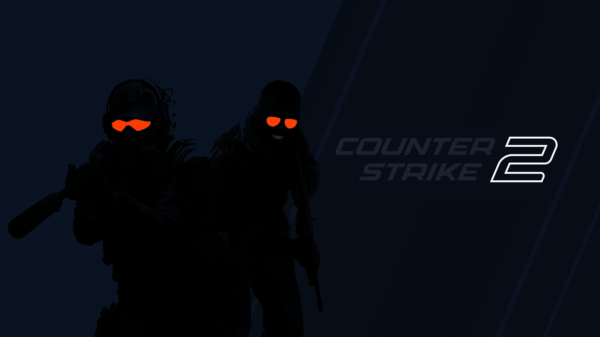
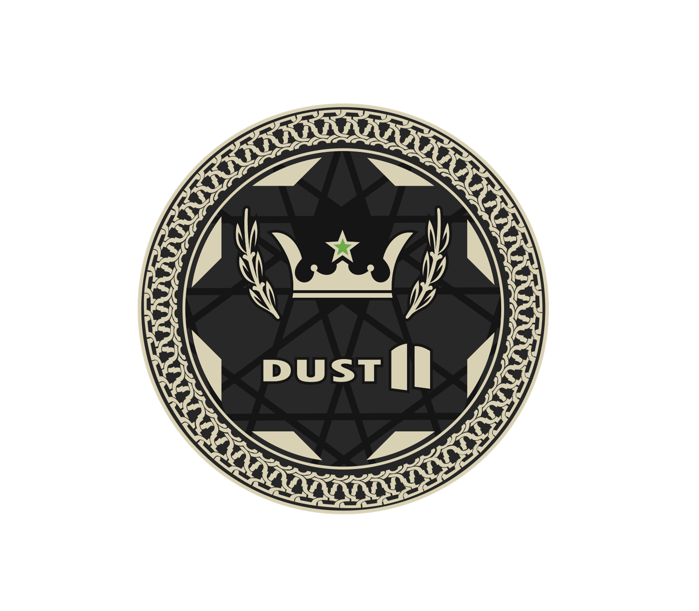
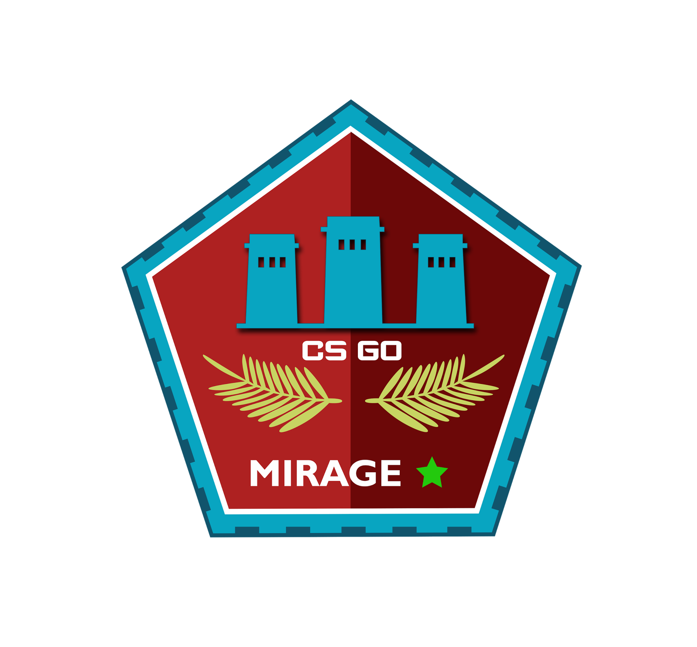
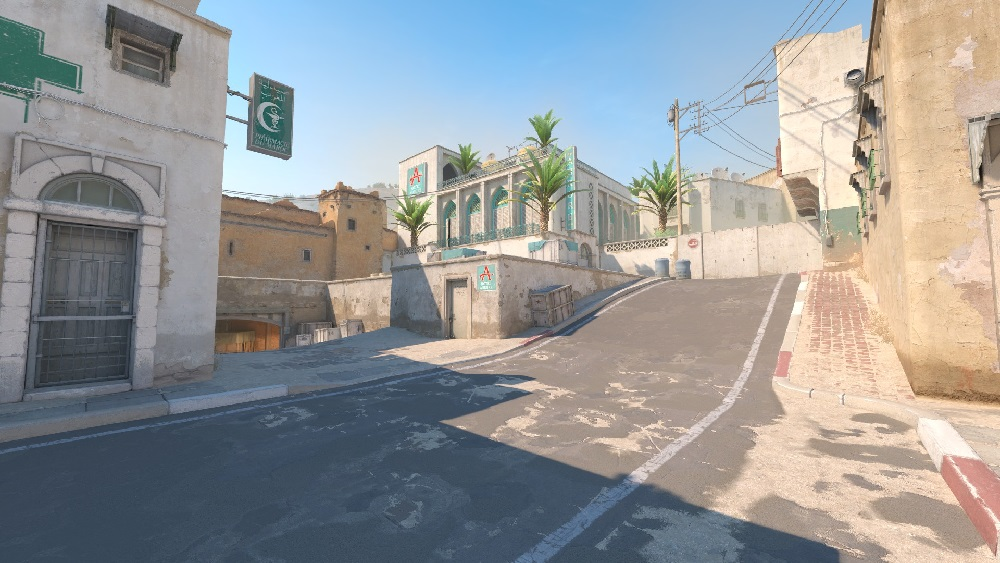
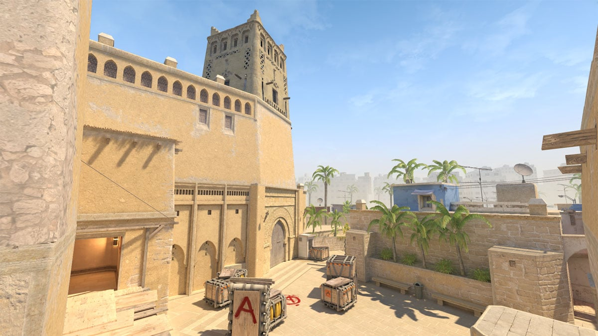
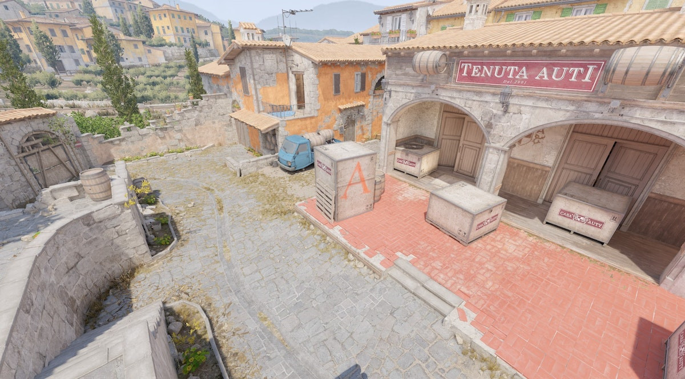

Counter-Strike 2 představuje novou generaci kompetitivních FPS her. Valve využilo moderní Source 2 engine a vytvořilo rychlou, realistickou a vizuálně působivou multiplayer zkušenost.
Counter-Strike 2 byl oficiálně vydán společností Valve v roce 2023 jako nástupce Counter-Strike: Global Offensive.
Hráči se rozdělují do dvou týmů — Terrorists a Counter-Terrorists. Každé kolo vyžaduje přesnost, taktiku a týmovou spolupráci.
Díky Source 2 enginu získala hra detailnější grafiku, lepší fyziku a nové dynamické kouře, které reagují na výstřely i granáty.

Mapy jsou jednou z nejdůležitějších částí Counter-Strike. Každá nabízí odlišnou strategii, callouty a herní styl.


Dust II patří mezi nejikoničtější mapy celé herní historie. Je známá jednoduchým designem a perfektní vyvážeností.
Long, Mid a B Tunnel patří mezi nejznámější lokace mapy. Dust II se pravidelně objevuje na profesionálních turnajích.

Mirage je jedna z nejoblíbenějších kompetitivních map. Vyžaduje precizní využití smoke granátů a flashbangů.
Kontrola Midu často rozhoduje celé kolo a týmová koordinace je zde extrémně důležitá.

Inferno nabízí úzké koridory a intenzivní boje. Banana a Apartments jsou ikonické části mapy.
Správné používání utility a komunikace jsou klíčem k vítězství.
